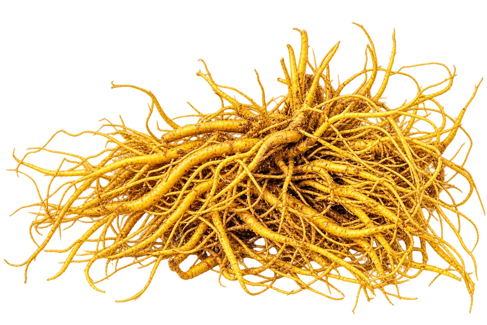
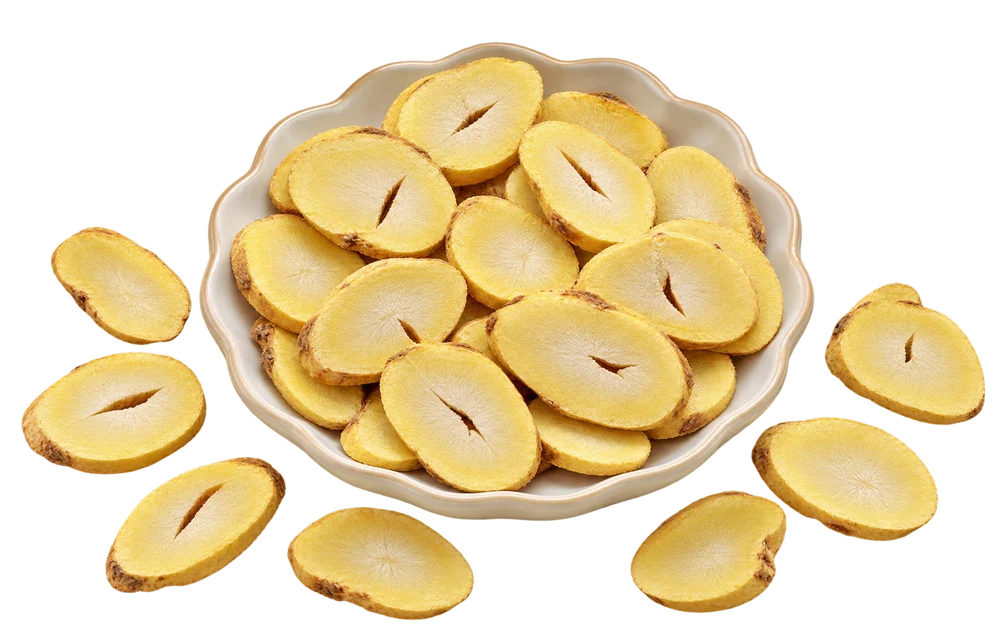

↗
↗Trống rượu gỗ sồi
Từ 3.900.000đKhám phá ↗
Giá & dung tích giả định để duyệtĐỖ THỊ TUYẾT · SÂM NỮ HOÀNG
Một món quà được chọn bằng sự trân trọng.
Một dấu ấn từ sắc gỗ, dáng bình và sắc rượu.
GỖ SỒI · THỦY TINH · HỒ LÔ

BỘ SƯU TẬP NGỰ VỊ NỮ HOÀNG TƯU
BỘ SƯU TẬP ĐẶC TRƯNG
Năm cách thể hiện của Ngự Vị Nữ Hoàng Tưu. Chọn một kiểu dáng để xem ảnh, quy cách và giá dự kiến.
Tất cả sản phẩm ↗↗ ↗
↗ ↗
↗ ↗↗
↗↗Khám phá chai quà tặng và bình hồ lô.
NGHỆ THUẬT CHỌN QUÀ
Một món quà phù hợp bắt đầu từ người nhận. Dáng chai thanh lịch, bình hồ lô tròn đầy hay trống gỗ sồi nổi bật — mỗi lựa chọn mang một cách bày tỏ riêng.
Cẩm nang chọn quy cách ↗Ngự Vị Nữ Hoàng TưuBỐN DÒNG SẢN PHẨM
Sâm tươi, sâm khô, cao sâm và bộ sưu tập rượu.

01SÂM NGUYÊN LIỆU
Danh mục sâm tươi, dành cho những ai muốn tìm hiểu nguyên liệu ở dạng tươi.
Khám phá dòng sản phẩm ↗
02SÂM CHẾ BIẾN
Danh mục sâm khô, mở thêm lựa chọn từ nguyên liệu sâm.
Khám phá dòng sản phẩm ↗03DÒNG RƯỢU SÂM
Ngự Vị Nữ Hoàng Tưu với năm kiểu bình, chai và trống gỗ sồi. Khám phá từng quy cách qua hình ảnh thực tế.
Khám phá dòng sản phẩm ↗ 04
04SÂM CHẾ BIẾN
Danh mục cao sâm, dành cho nhu cầu tìm hiểu sản phẩm sâm ở dạng cao.
Khám phá dòng sản phẩm ↗Ảnh nguyên liệu được dựng từ tư liệu có nguồn; bao bì cao sâm là thiết kế minh họa. Xem chú thích tại trang sản phẩm.
CÂU CHUYỆN ĐỖ THỊ TUYẾT
Hộ kinh doanh cá thể Đỗ Thị Tuyết phát triển Sâm Nữ Hoàng từ hai vùng trồng tại Hà Nội. Theo thông tin chủ hộ, cây giống được nhập và trồng với sự cho phép của MS Thiên Ngọc.
TẠP CHÍ SÂM NỮ HOÀNG
Những bài đọc về giống cây, người nghiên cứu và cách lựa chọn sản phẩm.
Đọc tất cả bài viết ↗
VỀ GIỐNG SÂM
Một tên gọi quen thuộc trên thị trường, nhưng để hiểu nguyên liệu, hãy bắt đầu từ tên khoa học và nguồn giống.
Đọc câu chuyện ↗
CON NGƯỜI & GIỐNG CÂY
Tìm hiểu người nghiên cứu giống cây qua tư liệu báo chí và mối liên hệ với nguồn nguyên liệu của hộ kinh doanh.
Đọc câu chuyện ↗
THÀNH PHẦN & TƯ LIỆU
Một con số thành phần chỉ có ý nghĩa khi biết đó là mẫu gì, được xử lý ra sao và được báo cáo bằng đơn vị nào.
Đọc câu chuyện ↗TƯ VẤN THEO NHU CẦU